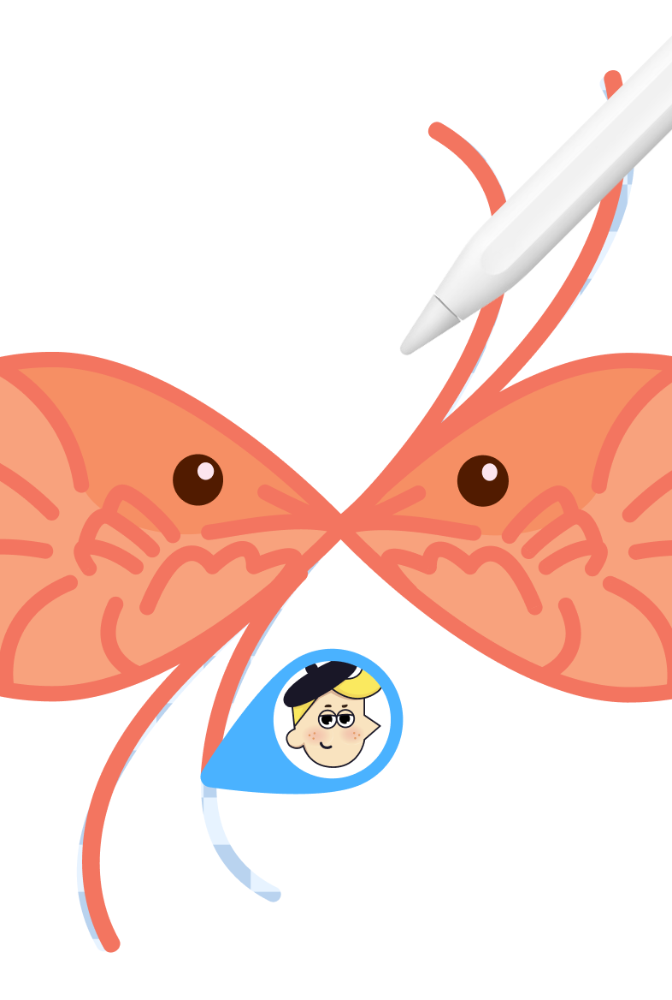

ArtWorkout 新手入坑指南 — 零基础也能画出像样作品的神奇画板
完全不会画画也没关系，ArtWorkout 把每幅画拆成十几步，每步只让你画一条线。跟着引导线走，15 分钟就能画出你人生第一幅"像样"的作品。
这篇能带你从完全不懂画画到真的画出一幅像样的作品——全程不需要任何美术基础，你只需要会用手指（或鼠标）在屏幕上画线就行。
它到底是干嘛的？一个生活化类比
你见过那种成人填色书吗？给你一张黑白线稿，你往里涂颜色就行，最后出来一张"哇这是我画的！"的成品。ArtWorkout 就是这种思路的升级加强版——但它不给你现成的线稿，而是手把手带你画每一条线。
打个比方：想象你跟一个特别有耐心的朋友在画画。他不教你"什么是透视""什么是比例"，而是拿起笔在纸上画一条半透明的虚线，跟你说："来，就沿着这条线画一笔，就这一笔。"你画完了，他再画下一条虚线："好，接下来画这条，别着急。"十几分钟后，你发现自己画完了一只小猫或者一朵云，居然还挺好看的。
ArtWorkout官网 就是那个朋友——只不过它是个 App，而且不会累。
五分钟上手：从打开到画出第一笔
第一步：装 App
在手机应用商店搜索 ArtWorkout 就能找到。下载 完打开，iOS 和 Android 都有，免费版就能用核心功能。装完打开，它会问你要不要先注册（可以跳过，直接体验），然后就到了主界面。
第二步：选第一节课
主界面上会看到一堆课程卡片——有动物、风景、人物头像，还有 Daily Challenge（每天一道小练习，一般 8 步就能画完）。别挑复杂的，找一个 Beginner 标签、步骤数在 10-12 步左右的，比如一只简单的小猫头像或者一朵太阳花。点开它。
第三步：理解画板上的东西
进入课程后你会看到：
- 中间大面积是画板（就是你要画的地方）
- 底部有几个按钮：画笔、橡皮、撤销、下一步
- 最上面有个步骤进度条（比如 3/12），告诉你当前是第几步
- 最关键的：画板上飘着一条半透明的彩色线，这就是引导线
第四步：跟着引导线画
用手指（如果是手机）或者鼠标（如果是平板/电脑），沿着那条半透明引导线描一遍。不用追求 100% 贴合——App 有评估系统，在引导线附近一定范围内都算合格。
画完了？底部的"下一步"按钮会自动亮起来，或者等你几秒后自动跳到下一条引导线。就这样，一条线一条线地画。
第五步：完成你的第一幅作品
大概 15 分钟后，最后一条引导线消失，App 会展示你的最终作品，还给你打个分（准确度 + 笔触质量）。这时候你肯定会觉得："我真的画出来了？"别怀疑，那就是你画的。
上手后先玩这三个功能
一、Daily Challenge：每天一道小题
这是新手最值得先碰的东西。每天只有一道题，8-12 步，10 分钟以内就能完成。你会发现：
- 它为什么重要：因为它短，不容易让你产生"我今天没时间"的借口。连续画 7 天，比集中一个周末突击 10 节课有用得多。
- 你会看到什么：很多人在社区里打卡自己的 Daily Challenge 成品，还会晒自己第 1 天和第 30 天的对比图。
- 这意味着什么：坚持这件事本身就是 ArtWorkout 的一部分乐趣。你不一定每天进步很大，但每天都能"完成"一件事，这种小小的成就感会推着你继续。
二、自由画布（Free Canvas）：脱离引导线自己画
当你跟着引导线画了五六节课以后，试试点进自由画布模式——没有引导线，没有评分，就给你一块空白画板和几支笔。
- 你会看到什么：App 里有各种笔刷（铅笔、马克笔、水彩笔、炭笔等），可以调色，可以改画板大小。想深入了解笔刷参数怎么调，可以去 artworkout文档 翻一下。
- 这意味着什么：从"跟着画"到"自己画"的跨越。这时候你才真正开始练习创造力。别担心画得歪歪扭扭——谁第一次自己画不歪呢？
三、多人房间（Connect）：跟朋友一起画
ArtWorkout 支持多人接力画画——3-4 个人进同一个房间，轮流在画板上画自己的部分，最后拼成一幅完整的画。
- 你会看到什么：实时看到其他人在画板上落笔，还能语音或文字聊天。
- 这意味着什么：画画不再是一件孤独的事。和朋友一起画会变成一次愉快的周末活动。不过这个功能 PRO 会员用起来更自由——免费版可能会有次数限制。

小白的三个常见疑问
疑问一：为什么加载这么慢？
ArtWorkout 的课程是存在云端的，第一次打开需要联网下载引导线数据。如果你在地铁里或者 Wi-Fi 信号不好的地方，可能加载半天。别担心——试试这几个办法：
- 切换一下 Wi-Fi 和移动数据
- 清理一下手机存储空间（建议至少留出 500MB）
- 如果只是某一门课慢，可能是它刚上线、服务器还在缓存，等一天再试就好了
PRO 会员有个福利：可以把课程下载到本地，之后离线也能画。如果你经常在没网的地方用，这个功能值回票钱。
疑问二：画不好能不能重画？
当然可以。每一步旁边都有跳过和重画按钮——画歪了就重画这一步，不会影响其他步骤。不过别无限重画某一步——这不是考试，追求百分百完美反而会让你失去乐趣。画得差不多就行，继续往下走，画完了再来对比。
疑问三：免费版和 PRO 版差很多吗？
免费版能用 Beginner 和部分 Intermediate 课程，够你玩一阵子了。PRO 版主要解锁完整课程库（3500+ 门课）、去广告、多人模式无限制、离线下载这些功能。如果你只是想试试能不能坚持，先用免费版画一周 Daily Challenge 再说。新用户一般有 7 天免费试用 PRO 的机会，想体验完整功能可以先开试用，记得第一天就去系统设置里关掉自动续费——试用期结束就自动退回免费版，不会被扣费。
最后想说的
我见过有人用 ArtWorkout 画了半年，从连直线都画不直，到能用自由画布画出一幅像样的风景水彩。关键不在于你有没有天赋，而在于你愿不愿意每天花 15 分钟坐下来画。
如果你觉得自己"手残没救了"，那就试试 ArtWorkout——它不会让你画一整张画，只会让你画一条线。而一条线，谁都能画好。
等你画了五六节课、开始想"能不能脱离引导线自己画点东西"的时候，就可以去看一些进阶内容了——比如怎么调笔刷质感、怎么叠色这些技巧，都在 ArtWorkout 的配套资料里。
这套资料在 GitHub、Gitee、GitCode 三个仓库都能拿到——毕竟不同地区的访问速度不一样，哪个快就用哪个。文档维护者也说了，三个仓库的内容始终同步更新，所以不用纠结选哪个。